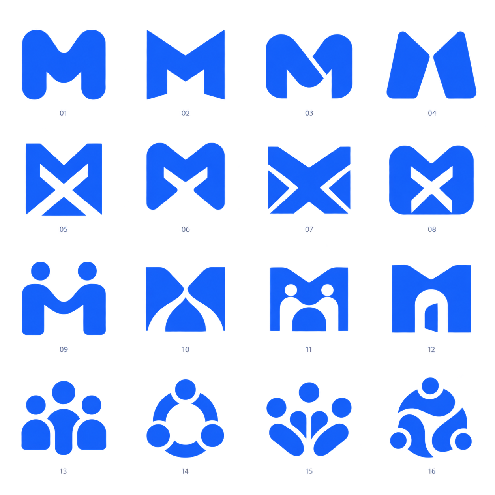
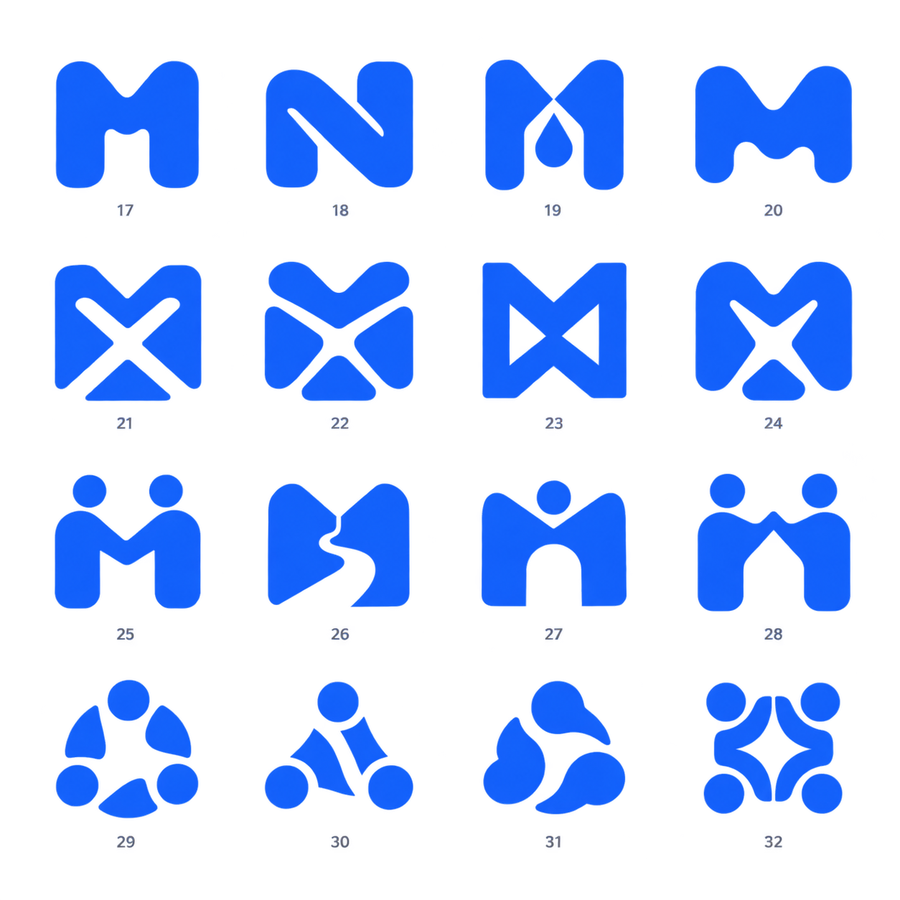

MixedRoutes / Logo exploration
Simple. Bold. Our own.
50 app icon concepts: distinctive M forms, M/X monograms, meaningful negative space, and standalone symbols.
01–16 / Core directions
M, M/X, people and shared paths.

17–32 / Softer silhouettes
Rounded joins and compact, confident forms.

33–50 / Paths coming together
Shared routes, crossing points and connection.